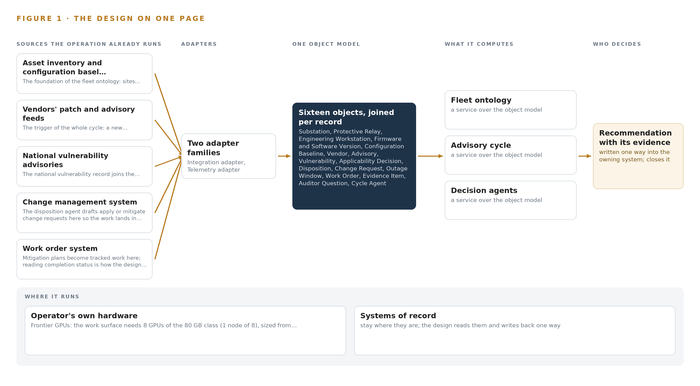
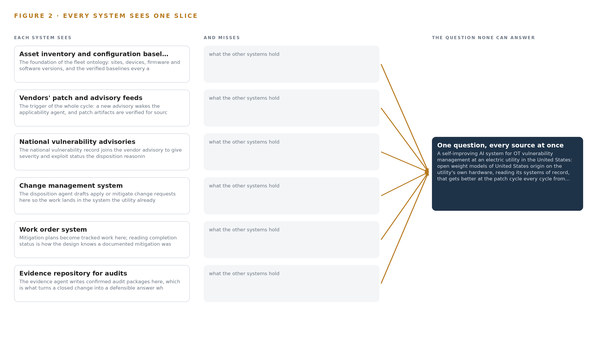
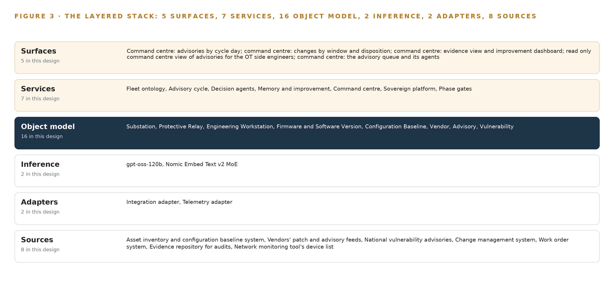
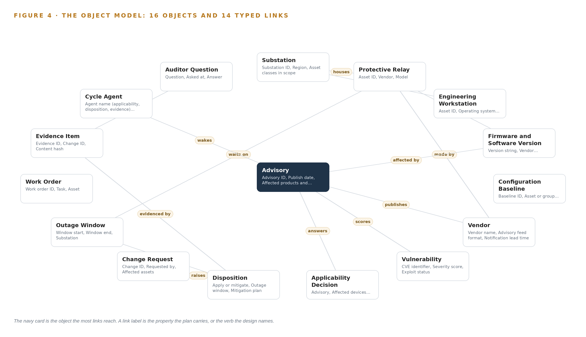
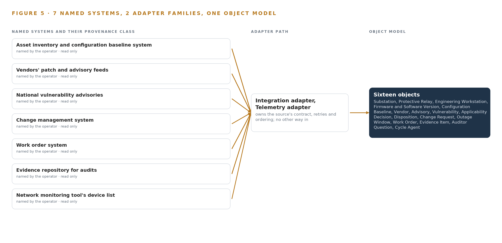
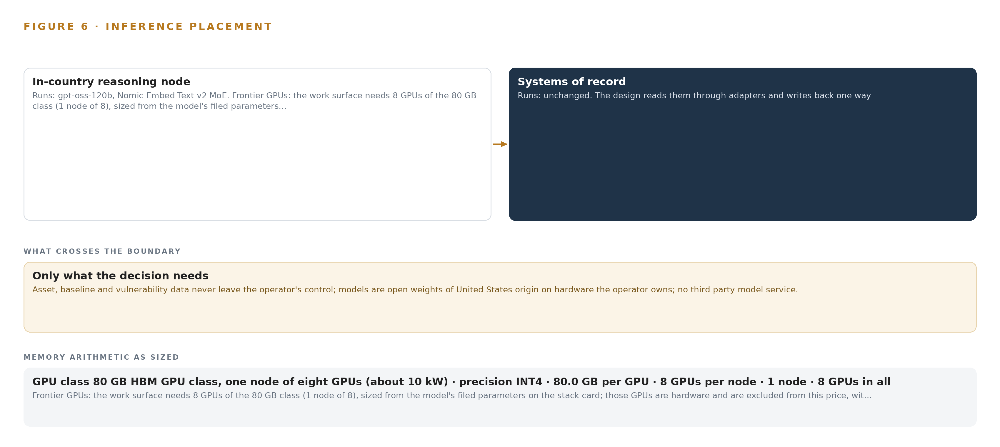
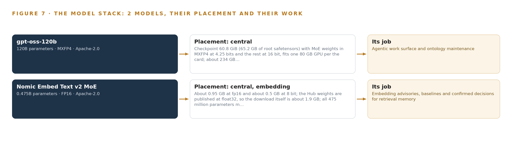
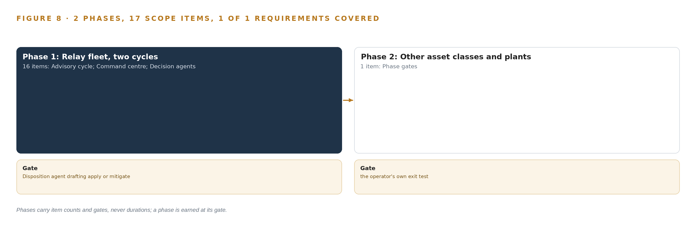
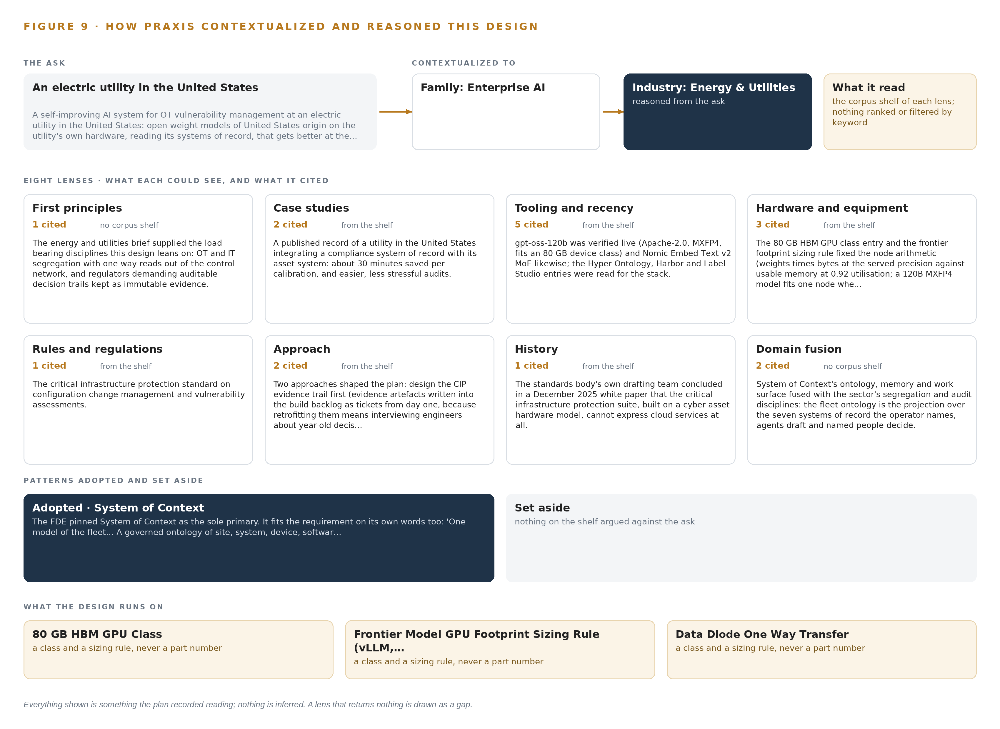

A Self-Improving AI System for OT Vulnerability Management at a Utility in the United States
Energy & Utilities Watch: One Living Picture of the Operation
For the leaders accountable for energy & utilities operations, their supervisors, and the data and platform engineers who would build and run it.
Vertical-Driven Architectures is a CodeNinja series of system designs. Every design in the series is driven by a real-world problem and scenario in a single industry, and every one is designed on Praxis, CodeNinja's platform for designing physical AI systems. Operations are described by class, never by name.
A Self-Improving AI System for OT Vulnerability Management at a Utility in the United States
What this is. An open reference architecture for system design in physical AI, built for an electric utility in the United States whose substations, control centers and generating plants fall under the critical infrastructure protection standards, where owning the inference node that runs it costs about 477,000 US dollars over three years. When a vendor publishes a relay firmware advisory on day thirty of a cycle, the design joins the device inventory, the verified baseline, the advisory, the national vulnerability record and the decisions made the last time this vendor's advisories touched these devices into one argument, so the compliance engineer sees which devices it touches and why, the asset owner approves apply or mitigate with its outage window and change request, and the auditor finds the evidence package where audits already look. The model runs entirely on the utility's own hardware, on open weights of United States origin, with nothing about its assets leaving its network. It is written for the leaders accountable for the patch cycle, their compliance teams and asset owners, and the data and platform engineers who would build and run it. The operator is described by class, never by name.
The answer in numbers.
| Part | The design |
|---|---|
| Sources | Seven systems of record read through their own APIs and scheduled exports, plus the verified patch artifact channel, entering through two adapter families (integration and telemetry) that stamp every record with its source system and freshness: the asset inventory and configuration baseline system, the vendors' patch and advisory feeds, the national vulnerability advisories, the change management system, the work order system, the evidence repository for audits and the network monitoring tool's device list; the sole writes are draft change requests into change management and confirmed evidence items into the evidence repository |
| Object model | 16 typed objects with 13 labelled typed links, from the substation, protective relay, engineering workstation, firmware and software version and configuration baseline through the vendor, advisory and vulnerability to the applicability decision, disposition, change request, outage window, work order, evidence item, auditor question and cycle agent, each anchored in the system it comes from or born in the design's own record, published as JSON for reuse |
| Models | gpt-oss-120b (Apache-2.0, about 120B parameters in MXFP4, United States origin) for the applicability, disposition and evidence agents, the command center's cited conversational surface and ontology maintenance; Nomic Embed Text v2 MoE (Apache-2.0, 475M parameters at FP16) embedding advisories, baselines and confirmed decisions for retrieval memory; no third party model service, nothing trained on the fly |
| Compute | One node of eight 80 GB HBM cards (640 GB, about 10 kW) in the utility's own data center, holding 70.1 GB by the sizing rule (117 billion parameters at INT4 times 1.2) with generous headroom for concurrent agent sessions; the embedding model on the same node; no edge tier; domestic supply, so no export control complication for a United States end user |
| Rollout | Two phases carrying 17 scope items (16 and 1), each closed by a gate, never a date: the protective relay fleet and its engineering workstations at one group of substations for two patch cycles, whose gate is the disposition agent drafting apply or mitigate recommendations that engineers confirm on the record, then an extension gate to the other asset classes and the generating plants; baselines frozen before anything changes, measured as engineer hours per cycle, windows kept, evidence completeness and auditor questions answered from the record |
| Three-year cost | About 477,000 US dollars to own the node for three years (a range of 437,000 to 496,000: server, support and power at the national average commercial price), against about 544,000 to rent the same eight H100 cards on the deepest three year commitment in AWS US East, so ownership costs about seven eighths of it, and about 1.45 million on demand, against which ownership costs about a third; the region's other 80 GB class instance, eight A100 cards, rents for about 268,000 on the same plan, against which owning the H100 node costs about 1.8 times as much. Renting is a price reference only, because every rented option would carry the asset and vulnerability record outside the utility's network (Appendix A) |
| Human control | Agents draft and people decide, by name: the compliance engineer confirms each applicability decision, the asset owner approves each disposition and its change request, the compliance manager confirms each evidence package, and no agent applies a patch, changes a baseline or closes a change; the acceptance rate is instrumented both ways, unflagged drafts are sampled independently each cycle, and a confirmed call becomes a precedent the next cycle retrieves |
Reuse it. The object model, the model register and the figures are free to reuse under CC BY 4.0. Cite as https://codeatoms.ai/ot-vulnerability-utility-us/.
Made with. Reasoned on [CodeNinja Praxis](https://codeatoms.ai/praxis/), the CodeNinja Atoms platform for designing physical AI systems. The object model imports into [Hyper Ontology](https://codeatoms.ai/hyper-ontology/), which turns it into a living system. Load it with the [hyper-ontology loader](../hyper-ontology-py/): `hyper-ontology show ot-vulnerability-utility-us`. Both are in beta; access by request.
The Answer Already Exists in the Systems the Operation Runs
A self-improving AI system for OT vulnerability management at an electric utility in the United States: open weight models of United States origin on the utility's own hardware, reading its systems of record, that gets better at the patch cycle every cycle from its engineers' confirmed decisions, without training a model on the fly and without anything about its assets leaving its network.
The design reads 8 source systems through 2 adapter families into one object model of 16 objects, runs 7 services over it and opens 5 surfaces to the people who decide, with 2 models placed where the data is. This engagement builds the utility a self-improving, utility-owned system for the OT patch cycle: a governed fleet ontology projected over its seven systems of record, three named agents that draft applicability, disposition and evidence while named people decide, and memory that compounds every confirmed call, all served on one node of the 80 GB GPU class running gpt-oss-120b inside the utility's own network, with nothing about its assets leaving it. The first phase runs on protective relays and their engineering workstations at one group of substations for two patch cycles, measured against the utility's own baseline of engineer hours, window compliance, evidence completeness and auditor questions answered from the record.
The paper covers the operation and the problem its systems cannot answer, the constraints, the stack, the object model, ingestion, inference placement, the models and their licenses, the rollout and its proof, ownership, and finally how Praxis contextualized and reasoned the design.

Contents
Each chapter is tagged for the reader it serves most directly: Executive, Team Lead, FDE, Reference.
| Abstract · The Answer Already Exists in the Systems the Operation Runs | Executive | |
| PART I · THE PROBLEM | ||
| 1 | A Daily Question Goes Unanswered in the Systems That Hold the Data | Executive |
| 2 | Every System Sees One Slice of the Operation | ExecutiveTeam Lead |
| PART II · THE DESIGN | ||
| 3 | Four Constraints Shape Everything Downstream | Team Lead |
| 4 | One Stack Runs From the Systems of Record to the Surfaces | Team LeadFDE |
| 5 | Sixteen Objects Turn Operational Data Into One Argument | FDE |
| 6 | Every Source Enters Through an Adapter, Never Directly | FDE |
| 7 | Inference Belongs Where the Data Is | FDE |
| 8 | The License Decides What the Operator Can Own | FDEExecutive |
| PART III · THE ROLLOUT | ||
| 9 | Shadow Mode Comes Before Any Flag Is Trusted | Team LeadExecutive |
| 10 | The Intelligence Should Stay with the Operation That Produced It | Executive |
| PART IV · HOW IT WAS DESIGNED | ||
| Conclusion · The Pattern Repeats Wherever Systems of Record Do Not Meet | Executive | |
| 11 | How Praxis Contextualized and Reasoned This Design | Team LeadFDE |
| Sources | Reference | |
A Daily Question Goes Unanswered in the Systems That Hold the Data
The operation holds every fact the question needs and no system answers it.
The abstract claimed the operator already holds every fact a self-improving AI system for the patch cycle needs, in systems it already runs. This chapter states that question exactly, prices the industry's failure to answer it, and fixes the scenario the design must serve: the assets, the people, the regulatory ground and the systems of record.
1.1 The Question and the Regimes Behind It
The question the operation needs answered, every time any vendor publishes any advisory, is one sentence: which of our devices does this touch, what does the verified baseline say, do we apply the patch or mitigate, and where is the evidence that we decided inside the window. The data it requires spans the device inventory with firmware and software versions, the verified configuration baselines, the vendor advisory text, the national vulnerability record with severity and exploit status, the change and work order history, and the reasoning behind past calls on the same devices. The regulatory ground comes in three parts. The reliability standards for critical infrastructure protection require review of every patch for every in-scope software and firmware item within thirty five days of release, and application or a documented mitigation plan within thirty five more; they require a verified configuration baseline for every system; and they require a full vulnerability assessment every fifteen months. Two named standards sit inside that family, because every change request the cycle raises carries CIP-005 and CIP-007 impact determinations, covering the electronic security perimeter and systems security management respectively.
1.2 What the Violations Cost
The operator's own reading is that the patch cycle is the most violated standard in the industry, and the public record shows what violation costs. Grid authorities issued a record 10 million dollar fine to a utility over more than 120 security violations spanning four years (Eenews 2019), a scale of penalty that turns each missed review window into a balance sheet exposure rather than an inconvenience. The cost of answering late is regulatory; the cost of executing carelessly is human, because 142 workers in the United States died in 2023 from exposure to electricity or arc flash (NFPA 2023). That figure is why outage windows, execution crews and change safety remain separate disciplines from assessment work, and why any system that drafts changes must respect the wall between deciding and doing.
1.3 The Operation as a Scenario
The operator is an electric utility in the United States, running substations, control centers and generating plants whose control systems fall under the critical infrastructure protection standards. Utilities of this class track thousands of in-scope devices from dozens of vendors, and the scenario is drawn at that class scale, with anything specific to the fleet treated as an assumption to confirm. The people in the loop, by role, are the compliance manager who owns the escalation ladder, the compliance engineer who confirms applicability and disposition drafts, the asset owners who approve changes on their devices, the OT-side engineers who hold read-only access, and the execution crews who take the outage windows. A handful of engineers carry the tacit knowledge of which vendors' advisories matter and which devices can take an outage, and two of them retire next year. The physical environments are substation control houses, plant control rooms, control centers and the corporate network behind the segregation boundary. The named systems of record number seven: the asset inventory and configuration baseline system, the vendors' patch and advisory feeds, the national vulnerability advisories, the change management system, the work order system, the evidence repository for audits, and the network monitoring tool's device list. The places are banded as one group of substations for the first phase, with the wider estate held behind the phase gates.
Every System Sees One Slice of the Operation
Each system of record sees its own part of the answer and none sees the whole.
Chapter 1 set out the question. This chapter explains why no system the operation already runs can answer it.
2.1 What Each System Sees
Asset inventory and configuration baseline system the foundation of the fleet ontology: sites, devices, firmware and software versions, and the verified baselines every applicability call must cite.
Vendors' patch and advisory feeds the trigger of the whole cycle: a new advisory wakes the applicability agent, and patch artifacts are verified for source identity and integrity before any change.
National vulnerability advisories the national vulnerability record joins the vendor advisory to give severity and exploit status the disposition reasoning cites.
Change management system the disposition agent drafts apply or mitigate change requests here so the work lands in the system the utility already governs by, never in a parallel queue.
Work order system mitigation plans become tracked work here; reading completion status is how the design knows a documented mitigation was actually implemented.
Evidence repository for audits the evidence agent writes confirmed audit packages here, which is what turns a closed change into a defensible answer when the auditor asks why a relay firmware patch was mitigated rather than applied.

2.2 What None of Them See Together
Each holds one slice, and the question needs all of them in one place at once, which today is done by hand at the cadence of whoever has the time.
Four Constraints Shape Everything Downstream
The goals, the scoping decisions and the exclusions were fixed before any component was chosen.
Chapter 2 showed the join failure: seven systems, each holding a slice, none able to carry the argument from advisory to evidence. This chapter fixes the four goals that shape every component chosen in Part II, the scoping decisions bought with them, and the alternatives the design stood against.
3.1 The System Must Improve While Every Decision Stays Named
The operator asked for a self-improving system, and the compliance regime asks that every call carry a named person. Recursive self-improvement is an active rollout priority at frontier AI companies and is beginning to diffuse into the broader corporate sector (Stanford 2026), but in a regulated OT estate an unattended improvement loop has no audit story. The design's answer is improvement from confirmed calls only: three agents draft applicability, disposition and evidence, named people confirm or reject, and memory compounds the confirmations. The difficulty is behavioral as much as architectural, because engineers under a thirty five day clock can rubber-stamp drafts, and a confirmation nobody made is poison to the memory; the design therefore instruments the acceptance rate both ways and samples unflagged items independently each cycle rather than reading a falling override rate as improvement.
3.2 Nothing About the Assets May Leave the Boundary
The operator set the rule in its own words: open weight models of United States origin, on hardware it owns, with no third party model service. This is the constraint that a self-improving AI system for a utility has to serve, and it fixes the compute before any model is chosen: one node of the 80 GB GPU class inside the operator's own network, a class with domestic supply and no export control complication. What is hard in this industry is direction: the useful inbound signals, advisories and vulnerability records, arrive from outside, while the asset facts must never travel out. The design reads inbound feeds through verified paths and sends nothing back, and where the operator's policy demands it, OT-side data leaves the electronic security perimeter only through a hardware-enforced one-way path with no return route and no credentials inside the perimeter.
3.3 Every Draft Lands in a System of Record
The disposition agent drafts apply or mitigate change requests in the change management system, not in a parallel queue, and the evidence agent writes confirmed audit packages into the evidence repository, because the utility already governs its work through those systems and the auditor already looks there. The difficulty is that the integrations are mixed, some APIs and some scheduled exports, so the ontology is only as current as its slowest source. The design therefore records freshness on every record under a per-system connector plan, and business-critical drafts refuse data older than an agreed age rather than guessing from stale baselines.
3.4 Weights Move Only Through Change Management
Improvement is memory first: retrieval of confirmed decisions, with supersession and tombstone checks on every retrieval so a wrong precedent cannot confirm itself. Weights change only through a separately governed offline fine-tune lane, promoted against a frozen question set built from the first cycles' confirmed calls, through the instruction gate, with the prior model retained in the registry for rollback, and never inside an active cycle week. The difficulty in this industry is timing: a regression in the served model surfaces mid-cycle, exactly when the thirty five day clock is running, so the promotion path is treated as a change like any other.
3.5 Scoping Decisions
Three scoping decisions translate the four goals into boundaries the build can hold, and each buys something at a stated cost, set out in Table 1. The first keeps every decision named while the agents do the drafting; the second makes the ontology a projection over the systems of record rather than a replacement for them; the third narrows the first phase to the relay fleet so the measurement is honest before anything widens.
| Decision | What it buys | What it costs |
|---|---|---|
| Agents draft, named people decide | Every applicability call, disposition and evidence package carries a named decision-maker an auditor can question and memory can learn from | Engineer time stays in the loop every cycle, and drafts must be marked preliminary so a confirmation is a real confirmation |
| A projection ontology over the systems of record | No migration and no parallel queue; the governed systems stay authoritative and evidence lands where audits already look | Freshness depends on a per-system connector plan across mixed APIs and scheduled exports, and stale records must be refused, not guessed from |
| Relay fleet first, two cycles | A measured baseline on one asset class at one group of substations before anything widens | Other asset classes and plants wait for the phase gates, and the first two cycles carry the knowledge elicitation burden for the retiring engineers |
3.6 What the Design Chose Against
Each rejected alternative was rejected for a reason the goals fixed in advance, and Table 2 records the choices with their grounds. The final row is the boundary of the engagement itself: the design drafts, tracks and evidences, and the programs it feeds rather than runs sit outside it, from patch execution to incident response, physical security, live training and grid telemetry.
| Where | What was picked | Instead of, and why |
|---|---|---|
| Memory | Retrieval memory of confirmed decisions with a governed offline fine-tune lane | Continuous online fine-tuning or a hosted service that improves itself, because served weights must not change inside a cycle and no third party may read the record |
| Compute | One node of the 80 GB GPU class on the operator's own hardware | Hosted or collocated inference, because the boundary rule and a three year cost computed from the models' own weights only work when the node is owned |
| Work surface model | gpt-oss-120b under Apache-2.0, about 120B parameters in MXFP4 | A larger hosted frontier service, whose terms would not let the operator hold the weights its cycle depends on |
| Integration | An adapter tier over the systems' own APIs and scheduled exports | Direct writes into the systems of record, which would make the ontology a second system of record and void the audit posture |
| Boundary | Hardware-enforced one-way transfer where the operator's policy demands it | A two-way conduit through the electronic security perimeter, which the segregation commitment rules out |
| Scope | Patch drafting, tracking and evidence for the cycle | Patch execution, OT monitoring build, incident response, physical security, live training and SCADA or telemetry integration, all of which belong to programs this design feeds but never runs |
One Stack Runs From the Systems of Record to the Surfaces
Systems of record below, one object model in the middle, services and surfaces above.
Chapter 3 fixed four constraints: open weights of United States origin on hardware the operator owns, every decision resting with a named person, the systems of record left exactly where they are, and a first gate that can stop the work cheaply. This chapter lays out the stack that satisfies those constraints stage by stage, from the systems of record at the bottom to the surfaces the compliance team works in at the top.
4.1 The Pattern and Why It Fits
The design follows one architectural pattern: systems of record below, one object model in the middle, applications and agents above. Below sit the seven named systems of record, the asset inventory and configuration baseline system, the vendors' patch and advisory feeds, the national vulnerability advisories, the change management system, the work order system, the evidence repository for audits and the network monitoring tool's device list; none is replaced, migrated or modified beyond the two draft write paths named in Chapter 5. In the middle sits the fleet ontology, a governed projection over all seven, so the join every applicability call needs happens once, in one place, instead of being remade by hand each cycle. Above it, three decision agents draft applicability, disposition and evidence, and the command center carries those drafts to named people who confirm or reject them.
The pattern fits this industry for three reasons. The failure of Chapter 2 is a join failure, and a join is solved at exactly one layer, which keeps every other layer replaceable. Each stage can be tested against the stage below it, so the first gate can be cheap. And energy regulators have begun publishing expectations for how AI should be governed in the sector (OFGEM 2026), and a stack whose reasoning layer is separable from its record layer is the shape such expectations ask for. Figure 3 shows the layered stack with its counts: eight sources, two adapter families, sixteen objects, two models, seven services and five surfaces.

4.2 The Stack Stage by Stage
Table 3 walks the stack stage by stage, naming the component responsible in each. Two things in it deserve note. The sensing stage is deliberately thin: the design watches advisories, baselines and decisions rather than sensor telemetry, so the one sensing input is the read-only OT-side device list and the clock that orders decisions. And the inference stage is deliberately centralized: gpt-oss-120b, about 120 billion parameters held in MXFP4 at roughly 61 GB of weights, runs on one node of eight 80 GB GPUs on the operator's own hardware, alongside the Nomic Embed Text v2 MoE embedding model at under 1 GB resident. Table 7, printed with this chapter, carries the layer by layer component choices behind these stages, layer, component, choice and why.
| Stage | What it is responsible for | How |
|---|---|---|
| Sources | Holding the truth the cycle reasons over | Seven named systems of record read-only through their own APIs and scheduled exports, plus the verified patch artifact channel |
| Sensing | Watching the OT side without a return path | The network monitoring tool's device list across a hardware-enforced one-way transfer where policy demands it, with Chrony 4.9 holding UTC ordering |
| Adapters | Owning every source's contract | Two adapter families, integration and telemetry, feeding an Apache Kafka 4.4 backbone, with Harbor v2.15.2 as the artifact and model registry |
| Object model | Making one argument from seven systems | The Fleet ontology service over the ontology or graph store class, sixteen objects with typed links |
| Inference | Drafting and retrieving on the operator's own hardware | vLLM 0.32 serving gpt-oss-120b and Nomic Embed Text v2 MoE on one node of eight 80 GB GPUs |
| Services | Running the cycle end to end | Fleet ontology, Advisory cycle, Decision agents, Memory and improvement, Command center, Sovereign platform, Phase gates |
| Surfaces | Where named people decide | Five command center views: advisories by cycle day, changes by window and disposition, evidence and improvement, the read-only OT-side view, and the advisory queue with its agents |
| Layer | Component | Choice | Why |
|---|---|---|---|
| Event streaming and messaging | by class, no product named | Product | Apache Kafka 4.4 |
| The ontology or graph store | by class, no product named | Class | An ontology or graph store class, fixed by what the sixteen objects and their typed links demand |
| Time series and telemetry storage | by class, no product named | Not needed | This design watches advisories, baselines and decisions, not sensor telemetry; cycle metrics are records in the ontology's store, and no historian feed is in scope. |
| Video ingest, recording and management | by class, no product named | Not needed | No cameras anywhere in this requirement; the system reads advisory feeds and systems of record. |
| Edge model serving | by class, no product named | Not needed | All inference runs centrally on the utility's own hardware (intake answer: the utility's own hardware on its network); there is no edge box in this design. |
| On site language model serving | by class, no product named | Product | VLLM 0.32 |
| Object tracking and trajectory forecasting | by class, no product named | Not needed | No cameras, no physical tracking; the sole trajectories in this design are advisory to closure workflows, which the ontology models as events. |
| Edge orchestration of containers | by class, no product named | Not needed | There are no edge containers to orchestrate; the central services deploy as part of the platform build on the utility's own virtualisation. |
| An air gapped artifact and model registry | by class, no product named | Product | Harbor v2.15.2 |
| Labelling and retraining | by class, no product named | Product | Label Studio 1.23.2 |
| Time synchronisation across sensors and systems | by class, no product named | Product | Chrony 4.9 |
| Observability of the running system | by class, no product named | Product | Prometheus 3.13 LTS |
4.3 A Reusable Pattern
The reusable shape is this: a read-only projection ontology over whatever systems of record a team already governs, two adapter families owning the contracts, agents that draft with citations and never decide, memory that compounds only confirmed calls, and one sovereign node inside the boundary. A team carrying a similar brief swaps the object set, the source list and the clock, here the thirty-five day review and thirty-five day disposition windows the standards impose, and keeps the rules that make the shape safe: the single write path rule, drafts that must cite retrievable records, and confirmations that carry a named person. Self-improvement is an active priority at frontier AI companies and is diffusing into broader corporations (Stanford 2026); this design takes the safer register, memory first with a governed offline fine-tune lane promoted only through change management. That is what turns a self-improving AI system from a procurement posture into an engineering one: the sovereignty sits in the object model, the write paths and the node, not in a label.
Sixteen Objects Turn Operational Data Into One Argument
The object model is the join the systems never made.
Chapter 4 laid the stack from the systems of record to the surfaces. This chapter opens the middle layer, the sixteen objects of the fleet ontology and the typed links between them, because that layer is where the join the systems never made finally happens.
5.1 Sixteen Objects and Their Typed Links
The sixteen objects divide by where they anchor. Five anchor in the asset inventory and configuration baseline system: Substation, Protective relay, Engineering workstation, Firmware and software version, and Configuration baseline, which together carry the fleet's identity, firmware state and verified baselines. Two anchor in the vendors' patch and advisory feeds, Vendor and Advisory; one in the national vulnerability advisories, Vulnerability, which joins severity and exploit status to the vendor's notice. Two anchor in the change management system, Change request and Outage window; one in the work order system, Work order; and two in the evidence repository, Evidence item and Auditor question. Three anchor nowhere because they are born in the system itself: Applicability decision, Disposition and Cycle agent. These three hold the operator's own reasoning as first-class records with status vocabularies, rather than leaving it in an email thread, which is the failure the operator named when it asked why a mitigated relay firmware patch could not be explained to an auditor.
Figure 4 draws every object and its typed links. What the links buy is traversal. A question such as "which relays run firmware affected by the advisory published today, at which sites, under what outage constraints, and what did we decide the last three times this vendor's advisories touched those devices" is one walk across the links from Advisory through Firmware and software version to Protective relay, onward to the Substation and the Outage window, and back through prior Applicability decisions to their Evidence items. A document store could hold every one of those facts and still fail the question, because each answer would be a fresh manual join, and the person making it would be whoever is on the rota. Table 8, printed with this chapter, lists every object, the system it anchors in and its typed links.

| Object | Anchored in | Typed links |
|---|---|---|
| Substation | Asset inventory and configuration baseline system | houses: Protective Relay; hosts: Engineering Workstation |
| Protective Relay | Asset inventory and configuration baseline system | made by: Vendor; runs: Firmware and Software Version; waits on: Outage Window |
| Engineering Workstation | Asset inventory and configuration baseline system | no typed link recorded |
| Firmware and Software Version | Asset inventory and configuration baseline system | affected by: Advisory |
| Configuration Baseline | Asset inventory and configuration baseline system | no typed link recorded |
| Vendor | Vendors' patch and advisory feeds | publishes: Advisory |
| Advisory | Vendors' patch and advisory feeds | wakes: Cycle Agent |
| Vulnerability | National vulnerability advisories | scores: Advisory |
| Applicability Decision | The design's own record | answers: Advisory |
| Disposition | The design's own record | books: Outage Window; raises: Change Request; evidenced by: Evidence Item |
| Change Request | Change management system | no typed link recorded |
| Outage Window | Change management system | no typed link recorded |
5.2 The Human Loop and the Hosting Posture
The human loop lives in the status vocabularies of the three unanchored objects. An Applicability decision moves from Drafted to Confirmed or Rejected only when a named engineer acts; a Disposition moves from Drafted through Approved and Scheduled to Closed only through the change management system; a Cycle agent sits at Awaiting confirmation and cannot advance itself. Every confirmation carries the person who made it and the citations the draft stood on, so the reasoning an auditor asks for is in the record, not in a mailbox.
The hosting posture follows the constraints of Chapter 3. The object model and everything above it run on the operator's own hardware inside its own network in the United States, and nothing about its assets leaves that boundary. Identity is Keycloak 26.8 federated to the operator's own directory, so no person acts anonymously. External links are inbound and verified only: vendor feeds, national advisories and patch artifacts checked for source identity and integrity. The write paths back into any system of record are limited to the two named in the design, draft change requests into the change management system and confirmed evidence items into the evidence repository; every other source is read-only. Regulator guidance on AI in the energy sector asks that decisions be explainable and attributable (OFGEM 2026), and this posture delivers both by construction rather than by policy.
5.3 One Object in Its Recorded Form
The substation record below shows the id, label, kind, anchor, properties and typed links the platform prints for every object; the Protective relay, the object the first phase turns on, is recorded the same way, with its identity, vendor, model, firmware version, serial number, substation, criticality and outage constraint, a five state status vocabulary from In service to Out of service, and typed links to its site, its vendor, its firmware version and its outage window.
{ "id": "substation", "label": "Substation", "kind": "site", "anchored_in": "Asset inventory and configuration baseline system", "properties": [ "Substation ID", "Region", "Asset classes in scope", "Protective relay count", "Engineering workstation count" ], "status_vocabulary": [], "links": [ { "to": "protective-relay", "label": "houses" }, { "to": "engineering-workstation", "label": "hosts" } ] }Every Source Enters Through an Adapter, Never Directly
Nothing reaches the object model except through an adapter that owns its contract.
Chapter 5 defined what the object model holds and where the human loop lives. This chapter defines how data reaches that model: every source enters through an adapter that owns its contract, and nothing reaches the ontology directly.
6.1 Eight Sources and Their Provenance Classes
Figure 5 maps the integration. The design counts eight sources. Seven are named systems of record, and each is an operator record, read-only, reached through its own API where one exists and through a scheduled export where it does not: the asset inventory and configuration baseline system, which grounds every object anchored in the fleet's identity; the vendors' patch and advisory feeds, whose advisories wake the applicability agent; the national vulnerability advisories, which add severity and exploit status; the change management system, where drafted dispositions land as change requests; the work order system, whose completion status tells the design whether a documented mitigation was actually implemented; the evidence repository for audits, which receives the confirmed evidence items; and the network monitoring tool's device list, which is the reconciliation source, because devices the monitoring tool sees that the inventory lacks are applicability gaps, and drift between the two is itself a signal. The eighth source is the patch artifact channel, the patches themselves, which arrive from vendors and are verified for source identity and integrity before any change can reference them. All eight are reads; the sole writes out of the design are the two draft paths Chapter 5 named.

6.2 What the Adapter Tier Guarantees
Two adapter families own the contracts: the integration adapter, for the API and export sources, and the telemetry adapter, for the OT-side device list where it crosses a hardware-enforced one-way path. The tier guarantees five things. Each source is mapped once, into the object model, with its source system and freshness stamped on every record, so a citation always resolves to a retrievable record with a known age. Patch artifacts are verified for source identity and integrity before anything downstream may cite them. No agent, service or surface ever reads a source system directly, which is what keeps the ontology the single join. Business-critical drafts refuse data older than an agreed age rather than guessing from a stale baseline, which answers the risk that mixed API and export integrations leave the model stale on exactly the records an applicability call cites. And the write surface stays two paths wide, never more.
6.3 The Event Backbone
Apache Kafka 4.4 carries everything between the adapters and the ontology. Ordering is keyed on advisory identifiers and record identifiers, so the per-advisory and per-device sequence of events holds even when connector schedules interleave. Delivery is at least once, made safe by idempotent upserts keyed on record identity and content hash, so a replayed export can refresh a record but can never create a second applicability decision or a duplicate evidence item. Buffering is where the scheduled exports land: a vendor's batch or a work order extract arrives as a burst, sits in the topic, and drains at the connector's pace while the advisory cycle reads a watermark rather than a moment in time. Replication runs inside the operator's own cluster on its own hardware, so no record crosses the boundary in transit. Model and artifact updates travel the same discipline: Harbor v2.15.2 holds them as signed artifacts in the registry, a fine-tuned model is promoted only through the instruction gate with the prior version retained for rollback, and never inside an active cycle week, so the backbone that feeds the cycle never becomes a side channel around its governance.
Inference Belongs Where the Data Is
Each tier runs what its data and its link can carry.
Chapter 6 described how all of the sources enter through adapters and how the event backbone orders, buffers and replicates what they emit. This chapter decides where the reasoning on that data runs, and what the hardware must hold for it to run there.
7.1 Two Tiers, Both Central, and the Arithmetic That Fixes Them
The design runs two inference tiers, and both sit inside the operator's own network: a reasoning tier where the applicability, disposition and evidence agents draft their records, and an embedding tier that turns advisories, baselines and confirmed decisions into the vectors retrieval memory reads. There is no edge tier, because the patch cycle reasons over advisories and records rather than sensor telemetry, and the requirement fixes compute on the operator's own hardware on its network. Figure 6 shows both tiers, what runs on each, and what crosses the boundary to reach them.
The reasoning tier serves gpt-oss-120b, a mixture of experts model of about 120 billion parameters, on one node of eight GPUs of the 80 GB class. The arithmetic that fixes that node: the register files 117 billion parameters, and at INT4, 0.5 bytes per parameter, the weights occupy 58.4 GB; multiplying by 1.2 to cover KV cache and activations gives 70.1 GB the GPUs must hold. The node offers 640 GB, so the weights fit with generous headroom for concurrent agent sessions. The checkpoint itself is 60.8 GiB, 65.2 GB of root safetensors, with the mixture of experts weights in MXFP4 at 4.25 bits and the remainder at 16 bit; expanded fully to 16 bit it would need about 234 GB, which is what rules out a smaller host. KV cache runs about 4.8 GB per session, and vLLM 0.32 serves the model from the node it sits on.
The embedding tier runs Nomic Embed Text v2 MoE, 475 million parameters at FP16, about 0.95 GB resident and about 0.5 GB at 8 bit; the published Hub weights are float32, so the download is about 1.9 GB. All 475 million parameters stay resident, because every expert is in play at inference.

7.2 The Latency Budget
The binding clocks are regulatory rather than electronic: thirty-five days to assess every advisory and thirty-five more to apply it or document a mitigation, with a full vulnerability assessment every fifteen months. Inside that frame the budget is a working day: an advisory that arrives in the morning intake should be drafted, with citations to the baseline and to retrieved precedent, before the confirming engineer leaves. Retrieval reads are bounded by resident embeddings and a local graph query, not a network round trip, and the conversational surface answers at conversational speed because model, memory and ontology share one node. The design spends latency where it is free instead: cycle-day alarms at day 25 with a named escalation ladder to the compliance manager and the asset owner, so the genuinely slow part of the cycle, human confirmation, receives the warning rather than the drafting receiving speed it cannot use.
7.3 The Boundary and the Failure Modes
What crosses the boundary inward is content the operator must have: vendor advisories, national vulnerability advisories, and patch artifacts verified for source identity and integrity before any change. What crosses outward is nothing about the operator's assets. Where policy demands it, the network monitoring tool's device list and any OT-side data leave the electronic security perimeter through a hardware-enforced one-way path, with no credentials and no return path inside the perimeter; a DMZ conduit remains the lighter alternative where that policy does not apply, and OT-side engineers reach the command center read-only over the corporate network.
When the link fails, the adapters buffer and the backbone replays in order, but business-critical drafts refuse data older than an agreed age rather than guessing, because a mixed diet of APIs and scheduled exports can leave exactly the records an applicability call cites out of date. When power fails, the node rides the data center rack's existing power and cooling, and the services recover from the events the backbone retained. When the update path fails, the air-gapped Harbor registry still holds the last promoted model and its artifacts, promotion runs only through the instruction gate with the prior model retained for rollback, and nothing is promoted inside an active cycle week.
The License Decides What the Operator Can Own
Every model was chosen against its license before its accuracy.
Chapter 7 fixed where inference runs and what the node must hold. This chapter fixes what the operator owns once it holds those weights, because the license, not the benchmark, decides that.

8.1 Two Models, Both Ownable
Figure 7 sets out the model stack: one reasoning model and one embedding model, both on the same node, both under licenses that let the operator keep them. The reasoning model is gpt-oss-120b: about 120 billion parameters in a sparse mixture of experts architecture, served in MXFP4 with the dense portions at 16 bit. Its role is the agentic work surface and ontology maintenance: it is the model behind the command center's conversational surface that answers with citations, and behind the three agents that draft applicability, disposition and evidence. It runs centrally on the node of the 80 GB GPU class described in Chapter 7. Its license is Apache-2.0, a permissive license with no usage-based trigger and no field of use restriction, which is precisely what permits the operator to hold the weights on hardware it owns with no third-party model service in the loop. It was chosen because the requirement names open weights of United States origin on owned hardware, and the domestic supply of this GPU class carries no export control complication.
The embedding model is Nomic Embed Text v2 MoE: 475 million parameters, a sparse mixture of experts embedding model at FP16, about 0.95 GB resident. Its role is embedding advisories, baselines and confirmed decisions for retrieval memory, which is the mechanism by which the system gets better at the cycle every cycle. It runs centrally alongside the reasoning model, under the same Apache-2.0 terms, and it was chosen because improvement here must be retrieval of confirmed precedent first, not weight change.
The pattern the pair stands on matters more than either name: retrieval memory of confirmed decisions, with a governed offline fine-tune lane promoted only through change management, instead of continuous online fine-tuning or a hosted model service that improves itself. Recursive self-improvement is already moving from frontier laboratories into ordinary corporations (Stanford 2026), and an energy regulator has published guidance on ethical AI use in the sector (OFGEM 2026); a design whose every improvement is a retrieved, cited, human-confirmed record answers the governance question both raise, and does so with weights the operator can hold outright.
8.2 The Model and Equipment Register
Table 4 gathers the choices this chapter and Chapter 7 made, so an engineer building from the design can see each decision, what was picked, and the reason it was picked here rather than elsewhere.
| The choice | What was picked | Why here |
|---|---|---|
| Reasoning model | gpt-oss-120b, about 120B parameters, mixture of experts, MXFP4 | The requirement names open weights of United States origin; Apache-2.0 lets the operator hold them with no third-party model service |
| Embedding model | Nomic Embed Text v2 MoE, 475M parameters, FP16 | Embeds advisories, baselines and confirmed decisions; retrieval memory is how the system improves cycle to cycle |
| Serving runtime | vLLM 0.32 | Serves the reasoning model from the same node the weights sit on, with headroom for concurrent agent sessions |
| GPU class | 80 GB HBM GPU class, one node of eight GPUs, about 10 kW | Holds the 70.1 GB the sizing rule demands, on hardware the operator owns inside its own network |
| Sizing rule | Frontier model GPU footprint rule: filed parameters at INT4, 0.5 bytes each, times 1.2 for KV cache and activations | Turns the register's parameter count into the memory the GPUs must hold before any session starts |
| One-way transfer | Hardware-enforced data diode, with a DMZ conduit as the lighter alternative | OT-side data leaves the electronic security perimeter with no return path where policy demands it |
| Sensing | None | The design watches advisories, baselines and decisions; no cameras, no telemetry feed, no historian in scope |
| Pattern | Retrieval memory of confirmed decisions plus a governed offline fine-tune lane | Improvement the operator can audit, instead of online fine-tuning or a hosted service that improves itself |
| Ground | The operator's own data center rack, power, cooling and virtualization | Nothing about the operator's assets leaves its boundary, and every weight on the node is one it holds |
Shadow Mode Comes Before Any Flag Is Trusted
The rollout earns each phase at a gate the operator can read.
Chapter 8 settled which models the design holds and on what license terms the operator may hold them. This chapter sets out how the build earns trust in stages: what each phase carries, what its exit gate tests, what is measured while it runs, and what the design already knows can fail.
9.1 Phases, Workstreams and Gates
The rollout runs in two phases, shown with their item counts and exit gates in Figure 8. Phase 1 covers the protective relay fleet and its engineering workstations at one group of substations, and carries 16 items across six workstreams: Fleet ontology, Advisory cycle, Command center, Decision agents, Memory and improvement, and Phase gates. The Fleet ontology workstream builds the object model from the systems of record; the Advisory cycle workstream brings in the vendor and national feeds and reconciles the asset baseline against the network monitoring tool's device list; the Command center workstream stands up the five surfaces; the Decision agents workstream brings the applicability, disposition and evidence agents online in shadow; the Memory and improvement workstream writes confirmed calls back as precedents; and the Phase gates workstream holds the exit test itself. The gate is read from behavior, not from a calendar: Phase 1 exits when the disposition agent is drafting apply or mitigate recommendations that engineers confirm on the record. Phase 2 carries a single item, the extension gates and rollout to the other asset classes and the generating plants, and its exit gate is set from Phase 1 evidence rather than fixed in advance. Requirement coverage closes the loop: the design carries one requirement, covered in full, with nothing partial and no gap.

9.2 What the Rollout Measures
Phase 1 is measured across two patch cycles against the operator's own baseline, taken before anything changes: engineer hours spent per cycle, window compliance expressed as windows taken against windows missed, evidence completeness for closed changes, and auditor questions answered from the record rather than from email. Alongside those, the instrumentation watches the acceptance rate in both directions, the freshness of every record the drafts cite, and an independent sample of drafts that nobody overrode. Window compliance and evidence completeness are measured rather than assumed because the enforcement record gives the stakes: grid authorities have issued a record 10 million dollar fine to a utility over more than 120 security violations spanning four years (Eenews 2019), and the violations that fine counted were failures of documentation and follow-through of exactly the kind this cycle exists to prevent.
9.3 Failure Modes
Table 5 states each recorded failure mode and what the design does about it. The common thread is that the system's own improvement depends on the honesty of its inputs, so each mitigation protects either the confirmation, the memory or the clock.
| What fails | What the design does |
|---|---|
| Engineers rubber-stamp agent drafts, so a confirmed call stops being a real confirmation and the memory learns from approvals nobody made | Draft copy states the agent output is preliminary and the engineer is the decision-maker; the acceptance rate is instrumented both ways; unflagged items are sampled independently each cycle |
| A superseded, wrong or biased past decision is retrieved as precedent and confirmed again, compounding the error | Supersession and tombstone checks on every retrieval; every draft citation must resolve to the retrieved record; the retiring engineers' email-borne reasoning is curated, not bulk-imported, before it becomes precedent |
| The thirty five day window is missed because human confirmation, not drafting, is the bottleneck | Cycle-day alarms at day 25 with a named escalation ladder to the compliance manager and asset owner; the system flags and escalates but never confirms for a person |
| The offline fine-tune lane ships a model that is worse on the operator's own work, and the regression surfaces mid-cycle | A frozen question set built from the first cycles' confirmed calls; promotion only through the instruction gate with the prior model retained in the registry for rollback; never promoted inside an active cycle week |
| Mixed API and export integrations leave the ontology stale on exactly the records an applicability call cites | A per-system connector plan with freshness recorded on every record; business-critical drafts refuse data older than an agreed age rather than guessing |
| The engineers who know which vendors matter and which devices can take an outage retire before their reasoning is captured | Knowledge elicitation scheduled inside the first two cycles, with their confirmed calls and corrections written to memory as named precedents from day one |
9.4 Lessons
Shadow the drafts before anyone signs them. The agents come online drafting, never deciding, and the first cycles are run so that every draft can be compared against what the engineer would have written alone. This is what makes the acceptance rate a real number rather than a rubber stamp, and it is why the exit gate is a drafting gate: the system must show it can produce the work before anyone is asked to trust a summary of it. Sample what nobody overrode. A falling override rate looks like improvement and can simply be fatigue, so each cycle takes an independent sample of unflagged drafts and checks them as if they had been flagged. The memory only compounds from calls that survived that check, which keeps the precedent base worth retrieving. Treat record freshness as a gate, not a metric. A draft that cites a baseline record past its agreed age is refused before it is written, because a confident applicability call on stale data is worse than no call at all. Freshness is recorded on every record at ingestion, and the refusal is visible in the command center rather than silent.
9.5 What Is Still Open
Three questions remain open. The Phase 2 exit gate is unset; settling it decides what the extension to other asset classes must prove, and whether it is another drafting gate or a closed-loop evidence gate. The promotion threshold for the fine-tune lane is unset; settling it decides whether the served weights ever change or memory alone carries the improvement, and it sets the size of the frozen question set. The boundary path is a policy choice between the hardware-enforced one-way transfer and the lighter DMZ conduit; settling it fixes the hardware list and the exact path the network monitoring tool's device list takes out of the electronic security perimeter.
The Intelligence Should Stay with the Operation That Produced It
What the design builds belongs to the operator.
Chapter 9 showed how the rollout earns each gate. This chapter settles the question the whole design turns on: who owns what it builds, and where the intelligence lives once the cycles compound.
10.1 What the Operator Holds
Four assets change hands, and all four stay inside the operator's boundary. The first is the object model: sixteen objects with their typed links, projected over the seven systems of record, governed as a projection rather than a migration, so the asset inventory, change management, work order and evidence systems remain the records while the ontology remains something the operator can rebuild from them at any time. The second is the weights and fine-tunes: gpt-oss-120b and the embedding model both sit under Apache-2.0, held on the operator's own node of the 80 GB class inside its own network, with no third party model service in the path; any fine-tune is an artifact in the operator's own registry, promoted and rolled back through its own change management. The third is the decision record: every applicability decision, disposition, evidence item and auditor question belongs to the operator and is kept where its auditors already look, and the memory that compounds cycle over cycle is that record, readable without the models. The fourth is the boundary: nothing about the operator's assets leaves its network, and OT-side data crosses only through the hardware-enforced one-way path where its policy demands it. The design is one instance of the sovereign reference architectures this series documents: intelligence that compounds inside the organization that produced it, on weights that organization holds.
10.2 The Offer Behind the Design
CodeNinja builds each of these elements as a named product, and the mapping is direct. The applicability, disposition and evidence drafts that named people decide on are Decision Systems. The object model that holds the sixteen objects and their typed links is Hyper Ontology. The command center where the operator's compliance team and engineers act on drafts, and where they can build their own agents on the same governed model, is Hyper Pragma. The kept record of decisions and outcomes that every next decision reads before it acts is Hyper Engram. The operator's own hardware, the open-weight licenses and the in-country operation that keeps every byte inside the boundary are Sovereign Infrastructure. And the design itself, from the constraint set through the stack to the phase gates, was produced on Praxis, CodeNinja's platform for designing physical AI systems.
The Pattern Repeats Wherever Systems of Record Do Not Meet
Seen whole, the design is one object model over the systems an electric utility in the United States already runs, with inference placed where the data is and every decision left to a named person.
Running the same shape elsewhere takes the same four things: the named systems, an object model anchored in them, a first gate that can stop the work cheaply, and the license posture that lets the operator own what it learns.
How Praxis Contextualized and Reasoned This Design
Every choice above traces back to something Praxis recorded reading.
Chapter 10 settled where the intelligence lives: with the operator, on its hardware, inside its boundary. This closing chapter shows how the design was reasoned, so that any choice above can be traced back to the recorded reading that justified it (Figure 9).
11.1 Contextualizing the Ask
The ask was a self-improving system for OT vulnerability management: open-weight models of United States origin on the operator's own hardware, reading its systems of record, and getting better at the patch cycle every cycle from its engineers' confirmed calls, with no agent applying a patch or closing a change without a named approval. Praxis assigned it to the Energy & Utilities family in the United States. What Praxis read: the requirement record; the System of Context architecture record that fixed the work surface; the stack and equipment registers behind Chapters 4 and 8; the model cards for gpt-oss-120b and Nomic Embed Text v2 MoE; the eight lens libraries; and the six public sources in the register.

11.2 The Lenses
Table 6 states what each of the eight lenses could see, what it cited and what it contributed to the design. One lens returned nothing and is shown as the gap it was.
| Lens | Could see | Cited | What it contributed |
|---|---|---|---|
| First principles | no corpus shelf | 1 | The energy and utilities brief supplied the load bearing disciplines this design leans on: OT and IT segregation with one way reads out of the control network, and regulators demanding auditable decision trails kept as immutable evidence. |
| Case studies | the case study shelf | 2 | A published record of a utility in the United States integrating a compliance system of record with its asset system: about 30 minutes saved per calibration, and easier, less stressful audits. |
| Tooling and recency | the tooling and recency shelf | 5 | gpt-oss-120b was verified live (Apache-2.0, MXFP4, fits an 80 GB device class) and Nomic Embed Text v2 MoE likewise; the Hyper Ontology, Harbor and Label Studio entries were read for the stack. |
| Hardware and equipment | the hardware and equipment shelf | 3 | The 80 GB HBM GPU class entry and the frontier footprint sizing rule fixed the node arithmetic: weights times bytes at the served precision against usable memory at 0.92 utilisation, so a 120B MXFP4 model fits one node of eight. |
| Rules and regulations | the rules and regulations shelf | 1 | The critical infrastructure protection standard on configuration change management and vulnerability assessments. |
| Approach | the approach shelf | 2 | Two approaches shaped the plan, the first of them to design the CIP evidence trail first: evidence artefacts written into the build backlog as tickets from day one, because retrofitting them means interviewing engineers about year old decisions. |
| History | the history shelf | 1 | The standards body's own drafting team concluded in a December 2025 white paper that the critical infrastructure protection suite, built on a cyber asset hardware model, cannot express cloud services at all. |
| Domain fusion | no corpus shelf | 2 | System of Context's ontology, memory and work surface fused with the sector's segregation and audit disciplines: the fleet ontology is the projection over the seven systems of record the operator names, agents draft and named people decide. |
11.3 Patterns Adopted and Set Aside
Four patterns were adopted. Improvement is memory first: confirmed calls become retrievable precedents, and the offline fine-tune lane is a separately governed extension promoted only through change management. Every source enters through an adapter, and the sole writes are the draft and evidence paths named in the requirement. The ontology is a projection over the systems of record, not a migration of them. All inference runs centrally on one node, with no edge box anywhere in the design. Set aside, with reasons: continuous online fine-tuning and any hosted model service that improves itself, both ruled out by the operator's constraint on owned weights and by its change discipline; SCADA and telemetry integration, which would pull the design across the segregation boundary it is committed to respect; and any replacement of the systems of record, which would trade a governed projection for an ungoverned copy.
11.4 Where the Reasoning Lands
Three equipment classes carry the whole design. The 80 GB HBM GPU class holds gpt-oss-120b, whose checkpoint sits near 61 GB in MXFP4, on one node with generous headroom for concurrent agent sessions. The frontier model GPU footprint sizing rule turned the filed parameter count into that one-node answer, which is why no larger cluster is committed anywhere in the design. The data diode one-way transfer class stands behind the boundary where the operator's policy demands it, moving the network monitoring tool's device list out of the electronic security perimeter with no return path. Every figure, version, license and citation above traces to recorded reading: the stack card, the model cards, the equipment registers and the six public sources. Nothing in this paper is inferred beyond them.
What the Utility's Own Inference Node Costs Over Three Years
The paper is written for an electric utility in the United States, with every model running on the utility's own hardware inside its own network (chapter 1, section 1.3; chapter 3, section 3.2; chapter 5, section 5.2). This appendix therefore prices for the United States, with the national average commercial and industrial electricity prices for power and the AWS US East (N. Virginia) region, us-east-1, as the rental reference. The design's one inference tier is "one node of eight GPUs of the 80 GB class" serving gpt-oss-120b on vLLM 0.32 (chapter 7, section 7.1; Table 4, "GPU class" and "Serving runtime"), and Table 4 gives the node's draw as "about 10 kW". The embedding model needs no further hardware line: Nomic Embed Text v2 MoE is "about 0.95 GB resident" and "runs centrally alongside the reasoning model" on the same node (chapter 7, section 7.1; chapter 8, section 8.1). The node is priced two ways: owned, from a system builder's published starting price for an eight GPU HGX H100 server with support and power added, and rented, from the AWS price files for us-east-1, on demand and on the two three year all upfront plans. Every input is dated and cited, and the arithmetic is shown.
A.1 The Answer
Owning the node for three years costs about 477,000 US dollars, inside a range of 437,000 to 496,000. Renting the same eight H100 80 GB cards around the clock costs about 544,000 dollars on the deepest three year commitment (an AWS EC2 Instance Savings Plan, all upfront, for p5.48xlarge in US East (N. Virginia)), about 964,000 dollars on the three year Compute Savings Plan, all upfront, and about 1.45 million dollars on demand. Against the deepest commitment, ownership costs about seven eighths (476,745 / 543,866 = 0.88, and 0.80 to 0.91 across the range); against on demand, about a third (476,745 / 1,446,451 = 0.33). The paper names a class and not a part, and the region lists a second eight GPU instance in the 80 GB class, p4de.24xlarge with eight A100 80 GB cards, at about 268,000 dollars over three years on the same EC2 Instance Savings Plan, all upfront; against that instance, ownership of the H100 node costs about 1.8 times as much (476,745 / 268,025 = 1.78). Renting in any form is a price reference only: every rented option would carry the asset inventory, the configuration baselines, the vulnerability record and the decision record outside the utility's network to a third party, which the utility's own constraint of open weights of United States origin on hardware it owns, with no third party model service and nothing about its assets leaving its network, rules out (chapter 3, section 3.2; Table 2, "Compute"; Table 4, "Ground"). gpt-oss-120b and Nomic Embed Text v2 MoE both carry Apache-2.0 (chapter 8, section 8.1; Table 4), so there is no license line.
A.2 What the Hardware Would Cost
| Option | Basis | Three year cost (USD) |
|---|---|---|
| Owned, in the utility's own data center | One 8x H100 SXM5 80 GB node with support and power, broken out below | 437,000 to 496,000, typical 477,000 |
| AWS, US East (N. Virginia), on demand | p5.48xlarge, eight H100 cards, 640 GB of HBM3 (AWS 2026c), at 55.04 dollars an hour (AWS 2026b), 26,280 hours; outside the utility's network | 1,446,451 |
| AWS, US East (N. Virginia), three year Compute Savings Plan, all upfront | p5.48xlarge at 36.67866 dollars an hour (AWS 2026a), 26,280 hours; outside the utility's network | 963,915 |
| AWS, US East (N. Virginia), three year EC2 Instance Savings Plan, all upfront | p5.48xlarge at 20.69504 dollars an hour, the deepest three year plan for this instance in the region (AWS 2026a), 26,280 hours; outside the utility's network | 543,866 |
| AWS, US East (N. Virginia), three year EC2 Instance Savings Plan, all upfront, the other 80 GB class instance | p4de.24xlarge, eight A100 80 GB cards, 640 GB of HBM2e (AWS 2026d), at 10.1988023 dollars an hour (AWS 2026a), 26,280 hours; on demand 27.44705 dollars an hour (AWS 2026b); outside the utility's network | 268,025 |
The purchase option priced as the rental reference is the three year EC2 Instance Savings Plan, all upfront, the lowest three year rate the us-east-1 file lists for p5.48xlarge (the partial upfront and no upfront three year Instance plans list 22.016 and 23.77728 dollars an hour). Egress, storage of the mirrored records and the network link to the region are excluded, and the all upfront plans are paid in full on day one, so every rented figure is a floor.
The owned line, item by item:
| Line | Basis | Three year cost (USD) |
|---|---|---|
| Node | Exxact TensorEX 8U HGX H100 server, TS4-193475697, eight NVIDIA H100 SXM5 GPUs with 80 GB of HBM3 each, two AMD EPYC 9004 series processors, 24 DDR5 slots, six 3000 W 80 Plus Titanium power supplies, at its published starting price of 319,924 dollars (Exxact 2026); the page states no warranty term and no configured processor or memory quantity | 319,924 |
| Support | 8 to 12 percent of hardware value a year (Introl 2026), 10 percent typical, over three years | 76,782 to 115,173, typical 95,977 |
| Power | The paper's own figure for the node, "about 10 kW" (Table 4, "GPU class"), consistent with the 10.2 kW maximum NVIDIA gives for its own eight H100 system (NVIDIA 2026b) and eight cards of up to 700 W each (NVIDIA 2026a): 10 kW x 26,280 hours = 262,800 kWh, times a power usage effectiveness of 1.6 (above the 1.54 industry average, Uptime Institute 2025) = 420,480 kWh, about 11,680 kWh a month, at the United States average industrial price of 9.64 cents per kWh or the average commercial price of 14.47 cents per kWh, August 2026 (EIA 2026) | 40,534 to 60,843, typical 60,843 |
| Total | Low: 8 percent support, industrial price. High: 12 percent, commercial price. Typical: 10 percent, commercial price, because the paper names no state and no tariff, and a corporate data center behind the segregation boundary is billed as a commercial load unless the utility supplies it from its own generation | 437,240 to 495,940, typical 476,745 |
The power line is a ceiling: it takes the paper's 10 kW around the clock, and a work surface drafting for one compliance team will rarely hold eight cards at full draw outside a cycle day peak. It uses the national average price because the paper names no state; the utility is itself an electricity supplier, and what it pays for its own load will differ from either average. The builder's starting price is before sales tax, freight and installation, and a written quote will differ.
Why this hardware: the paper's sizing line is explicit, "the register files 117 billion parameters, and at INT4, 0.5 bytes per parameter, the weights occupy 58.4 GB; multiplying by 1.2 to cover KV cache and activations gives 70.1 GB the GPUs must hold. The node offers 640 GB" (chapter 7, section 7.1), and Table 4 fixes the class as "80 GB HBM GPU class, one node of eight GPUs, about 10 kW" (Table 4, "GPU class"). Eight H100 cards at 80 GB are 640 GB, and that is the node priced, as Exxact's HGX H100 server and as p5.48xlarge, whose eight H100 cards carry the same 640 GB (AWS 2026c). The paper's own arithmetic shows the class is chosen for headroom and for domestic supply, not for memory: 70.1 GB would fit one 80 GB card, and "the weights fit with generous headroom for concurrent agent sessions" (chapter 7, section 7.1).
Two things in the paper's own numbers, neither of which changes the node count or the price. First, the weights are 58.4 GB at INT4 in chapter 7, section 7.1 and Table 4, while the checkpoint is "60.8 GiB, 65.2 GB of root safetensors" in the same section and "near 61 GB in MXFP4" in chapter 11, section 11.4 and the abstract; 65.2 GB times 1.2 is 78.2 GB, which the same 640 GB node holds. Second, chapter 7 and Table 4 give about 120 billion parameters while the sizing rule uses the register's 117 billion; this appendix uses the register's figure as the paper does.
A.3 What the Price Does Not Include
- Export control. The node is bought and run inside the United States for a United States end user, so no export license is priced; the paper's statement that the class "carries no export control complication" (chapter 8, section 8.1) holds for that end user and is not a claim about any other destination.
- Everything the paper's scope boundary keeps out: patch execution, the OT monitoring build, incident response, physical security, live training and SCADA or telemetry integration (Table 2, "Scope"). The asset inventory, advisory feeds, change management, work order and evidence systems are the utility's own and carry no line here.
- The servers for the rest of the stack: the Apache Kafka 4.4 backbone, the ontology or graph store, the air gapped Harbor v2.15.2 registry, Label Studio, Keycloak and the observability stack are chosen by product or class and not sized in the paper (chapter 4, Table 7; chapter 6, section 6.3).
- The one-way boundary hardware: the hardware enforced data diode and the DMZ conduit are a policy choice the paper leaves open (chapter 9, section 9.5; Table 4, "One-way transfer"), and the paper gives no part or size.
- Facilities work for the node's load and cooling in the utility's data center, which the paper does not discuss beyond the rack's existing power and cooling (chapter 7, section 7.3).
- People: the engineers who build and run the platform, and the compliance engineers, asset owners and compliance managers who confirm every draft, whom every option carries.
- Sales tax, freight and installation on the hardware, which a written quote settles, and residual value at the end of three years.
- Warranty cover. The builder's page states no warranty term for this system, so the support line is priced in full and no cover is netted against it.
- A closed model token comparison, which is not printed because the paper states no token volume for the work surface.
A.4 Sources for This Appendix
- AWS. 2026a. EC2 Instance and Compute Savings Plans price files, region index and us-east-1, version 20261107012235 (published 7 November 2026), as read 8 November 2026; p5.48xlarge, Linux, RunInstances: 3 year All Upfront p5 EC2 Instance Savings Plan 20.69504, Partial Upfront 22.016, No Upfront 23.77728; 3 year All Upfront Compute Savings Plan 36.67866 dollars an hour; p4de.24xlarge 3 year All Upfront p4de EC2 Instance Savings Plan 10.1988023 dollars an hour. https://pricing.us-east-1.amazonaws.com/savingsPlan/v1.0/aws/AWSComputeSavingsPlan/current/region_index.json and https://pricing.us-east-1.amazonaws.com/savingsPlan/v1.0/aws/AWSComputeSavingsPlan/20261107012235/us-east-1/index.json
- AWS. 2026b. EC2 on demand price data for the AWS pricing page, Linux, shared tenancy, US East (N. Virginia), published 7 November 2026, as read 8 November 2026; p5.48xlarge 55.04 and p4de.24xlarge 27.44705 dollars an hour. https://b0.p.awsstatic.com/pricing/2.0/meteredUnitMaps/ec2/USD/current/ec2-ondemand-without-sec-sel/US%20East%20(N.%20Virginia)/Linux/index.json
- AWS. 2026c. Amazon EC2 P5 instances, p5.48xlarge, eight NVIDIA H100 GPUs, 640 GB HBM3, as read 8 November 2026. https://aws.amazon.com/ec2/instance-types/p5/
- AWS. 2026d. Amazon EC2 P4 instances, p4de.24xlarge, eight NVIDIA A100 80 GB GPUs, 640 GB of GPU memory, as read 8 November 2026 through the on demand price file's instance attributes (AWS 2026b) and the P4 instance page. https://aws.amazon.com/ec2/instance-types/p4/
- EIA. 2026. Electric Power Monthly, Table 5.6.A, Average Price of Electricity to Ultimate Customers by End-Use Sector, August 2026, U.S. Total: commercial 14.47 and industrial 9.64 cents per kWh, released 23 October 2026, as read 8 November 2026. https://www.eia.gov/electricity/monthly/epm_table_grapher.php?t=epmt_5_6_a
- Exxact. 2026. Exxact TensorEX 8U HGX H100 Server, TS4-193475697, eight NVIDIA H100 SXM5 80 GB HBM3 GPUs, two AMD EPYC 9004 series processors, six 3000 W power supplies, starting at 319,924.00 dollars, as read 8 November 2026. https://www.exxactcorp.com/Exxact-TS4-193475697-E193475697
- Introl. 2026. GPU infrastructure TCO model, "Vendor support agreements typically cost 8-12% of hardware value annually", as read 8 November 2026. https://introl.com/blog/gpu-infrastructure-tco-model-5-year-enterprise-ai-deployment
- NVIDIA. 2026a. H100 specifications, H100 SXM, 80 GB, maximum thermal design power up to 700 W (configurable), as read 8 November 2026. https://www.nvidia.com/en-us/data-center/h100/
- NVIDIA. 2026b. DGX H100/H200 User Guide, Introduction, Table 3 Power Specifications, "10.2 kW max", and 8 x NVIDIA H100 GPUs with 640 GB total GPU memory, as read 8 November 2026. https://docs.nvidia.com/dgx/dgxh100-user-guide/introduction-to-dgxh100.html
- Uptime Institute. 2025. Global Data Center Survey 2025, average annual PUE of 1.54, as read 8 November 2026 through https://mgrid.org/2025/10/01/uptime-institute-data-center-pue-stagnation-2025-liquid-cooling/ (survey page https://intelligence.uptimeinstitute.com/resource/uptime-institute-global-data-center-survey-2025)
Source Register
NFPA. 2023. Fatal Occupational Injuries in 2023 Caused by Exposure to Electricity or .... https://www.nfpa.org/education-and-research/research/nfpa-research/fire-statistical-reports/fatal-occupational-injuries-caused-by-exposure-to-electricity-or-arc-flash
OFGEM. 2026. Ethical AI use in the energy sector (version 2). https://www.ofgem.gov.uk/sites/default/files/2026-05/ethical-ai-use-in-the-energy-sector.pdf
Eenews. 2019. Grid regulator hits utility with record $10M fine , E&E News by POLITICO. https://www.eenews.net/articles/grid-regulator-hits-utility-with-record-10m-fine/
Stanford. 2026. The Ungovernable Machine , CodeX , Stanford Law School. https://law.stanford.edu/2026/03/17/the-ungovernable-machine/
About CodeNinja
CodeNinja is a Middle Eastern American artificial intelligence lab and system of context company. It builds sovereign self-improving systems that organizations own, run inside their own boundary and improve with every decision they make.